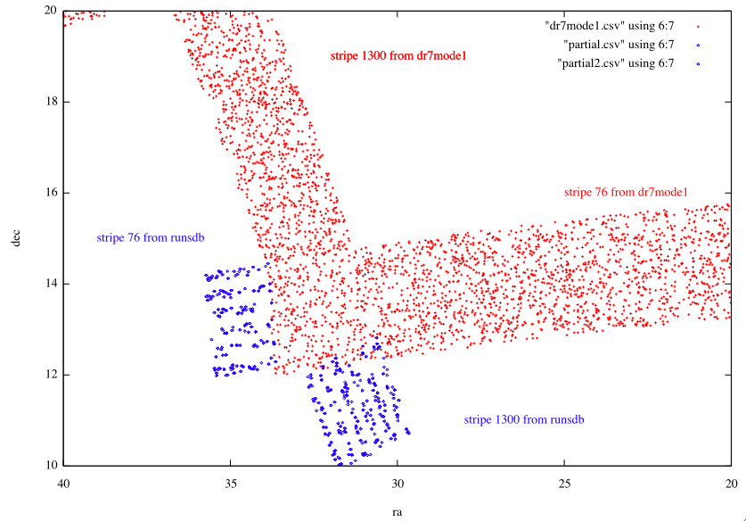

Select p.run,p.rerun,p.camcol,p.field,p.obj,p.ra,p.dec,g,mode,p.status,stripe,strip
From Photoobjall p,field f,segment s
Where
Ra between 40 and 20 and
Dec between 10 and 20 and
G between 18 and 18.2 and
p.fieldid = f.fieldid and f.segmentid = s.segmentid
(and mode=1 for the context dr7)
($11 == 1300 && $4 < 27 && $12==0) || ($11 ==76 && $4 > 219)
The South strip of Stripe 1300 from the runsdb consists of objects from run 5817.
The North strip of Stripe 76 from the runsdb consists of objects from run 1043.